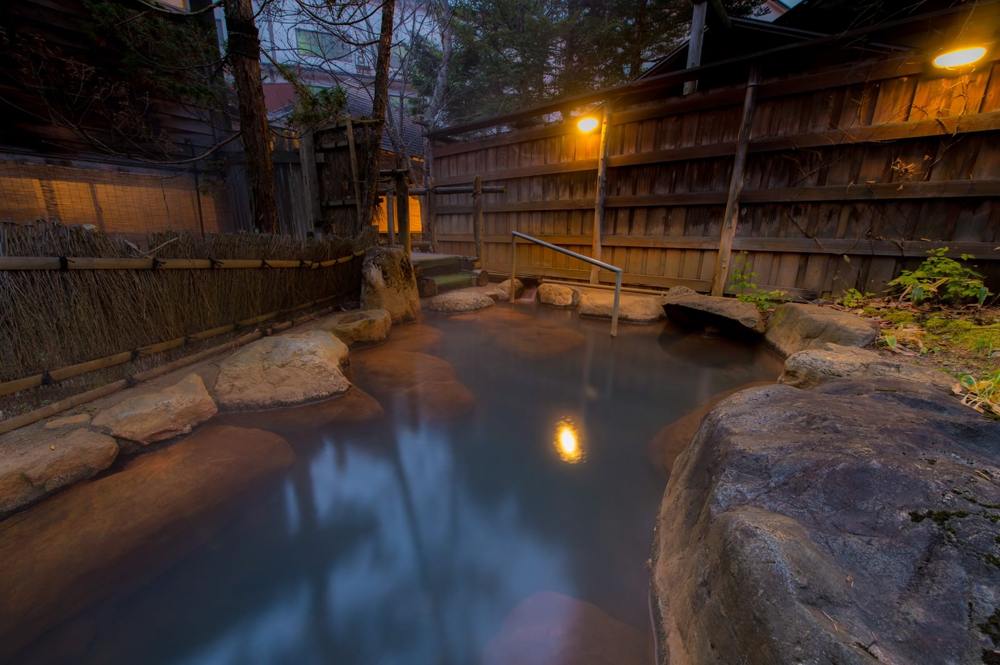
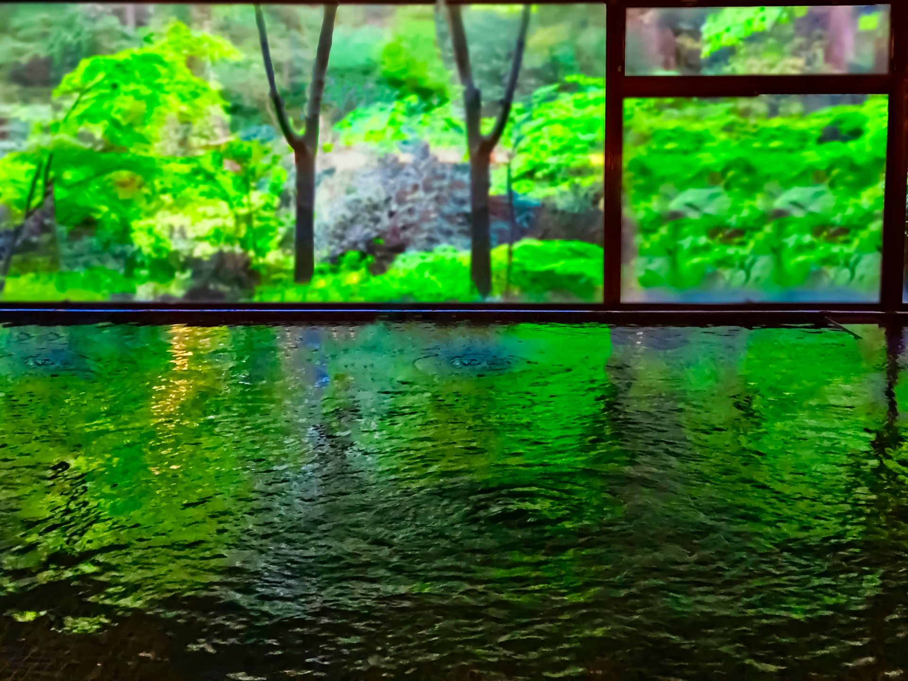
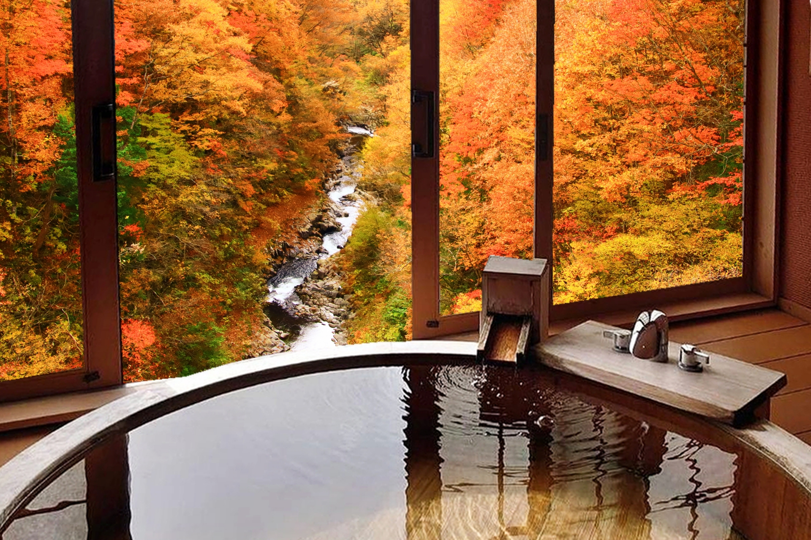

宿泊予約
ページ先頭に戻る
宿泊予約
ページ先頭に戻る
お風呂
古民家の趣きを映した湯処で、表情の異なる3つの湯をゆったりと。 自然の息づかいに包まれながら、心が静かにほどけていく湯浴みのひとときをお過ごしください。

風に映る景色とともに
木々をそよがせる風と、淡く揺れる光。 自然の息遣いがそっと寄り添う「風映の湯」では、移ろいゆく空の色と湯の温もりが、日常を静かに遠ざけてくれます。 湯面に映る景色は季節ごとに姿を変え、訪れるたびに違う趣を感じられる特別な露天風呂です。 深く息を吸い込み、ただ湯に身を委ねる——そんな贅沢な時間をお楽しみください。
Detail
葦（よし）を用いた天井と、重厚な梁が印象的な落ち着きある和室。古民家ならではの素朴な木のぬくもりが広がり、静かで穏やかな時間をお過ごしいただけます。
| 泉質 | カルシウム・マグネシウム・ナトリウムを含む炭酸水素塩泉 （低張性・中性・高温泉） やわらかな肌あたりで、自然と身体がほどけていく湯です。 |
|---|---|
| 効能 | 神経痛 / 筋肉疲労 / 関節痛 / 冷え性 / 肩こり / 皮膚の乾燥 ほか 外気とともに湯を愉しみ、心身を静かに整えます。 |
| ご利用時間 | 15:00〜23:00 / 6:00〜10:00 朝夕で異なる景色を映す湯あみをお愉しみください。 |
柔らかな灯りに包まれる、静の温もり
.jpg)
上質な静けさを味わえる内湯です
.jpg)
岩盤浴で、静かな贅沢と深い癒しを
.jpg)
心から安らぐ上質なひとときをお楽しみいただけます

上質な外の景色をお楽しみください
Detail
葦（よし）を用いた天井と、重厚な梁が印象的な落ち着きある和室。古民家ならではの素朴な木のぬくもりが広がり、静かで穏やかな時間をお過ごしいただけます。
| 泉質 | カルシウム・マグネシウム・ナトリウムを含む炭酸水素塩泉 （低張性・中性・高温泉） 湯上がり後も、しっとりとした余韻が続きます。 |
|---|---|
| 効能 | 神経痛 / 筋肉疲労 / 冷え性 / 慢性消化器不良 / 病後回復 ほか 一日の疲れをゆっくりと解きほぐす湯です。 |
| ご利用時間 | 15:00〜23:00 / 6:00〜10:00 夜は灯りに包まれ、朝は静けさの中でお愉しみいただけます。 |
風灯が誇る、格別の静寂と設え
.jpg)
穏やかな静けさに浸る贅沢なひと湯です
.jpg)
上質な静けさをお愉しみください。
.jpg)
特別な静寂をご体感ください。

季節ならではの風景も楽しめます
Detail
風灯でもひときわ上質な和室。
空間の余白、素材の質感、灯りの落とし方まで計算された設えが、深い寛ぎへと誘います。
特別な滞在を求める方へお届けする、風灯のデラックス和室です。
| 泉質 | カルシウム・マグネシウム・ナトリウムを含む炭酸水素塩泉 （低張性・中性・高温泉） 周囲を気にせず、ゆったりと湯に身を委ねていただけます。 |
|---|---|
| 効能 | 神経痛 / 筋肉疲労 / 冷え性 / ストレス緩和 ほか 心を解き放つような、静かな湯あみの時間を。 |
| ご利用時間 | ご滞在中いつでも お好きな時間に、思い思いの湯浴みをお楽しみください。 |